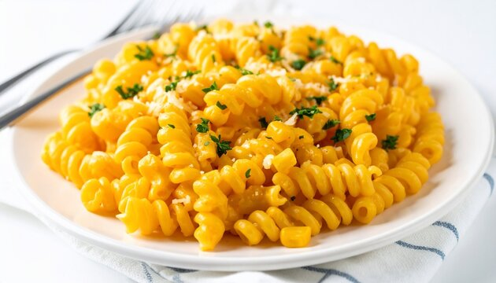

Creamy Garlic Pasta
A delicious and creamy garlic pasta that is simple to prepare and perfect for a quick homemade meal.
Ingredients
- 200g pasta
- 2 tablespoons butter
- 3 cloves garlic
- 1 cup fresh cream
- ½ cup grated cheese
- Salt and black pepper
- Fresh parsley
Preparation Steps
- Boil the pasta in salted water until soft.
- Melt butter in a pan and sauté minced garlic.
- Add fresh cream and mix well.
- Add cheese, salt and black pepper.
- Add the cooked pasta and combine everything.
- Garnish with fresh parsley and serve hot.